使用小程序
现在的手机电池是越来越不经用了。动不动就要充电。 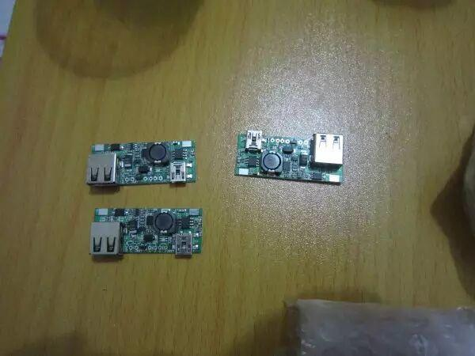 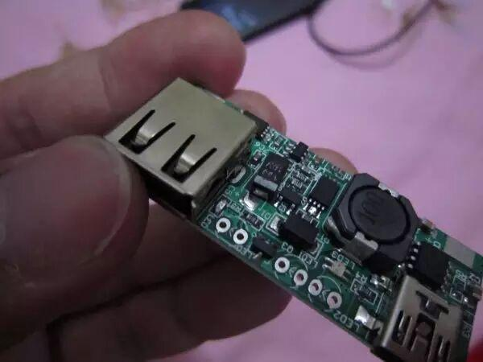 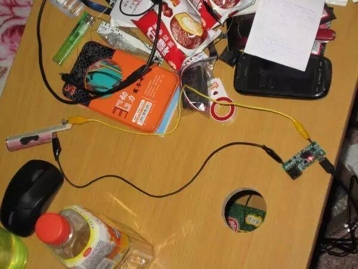 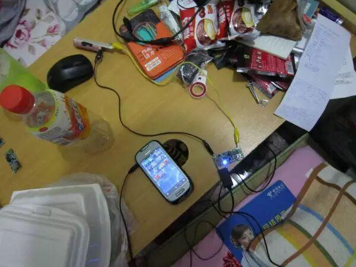 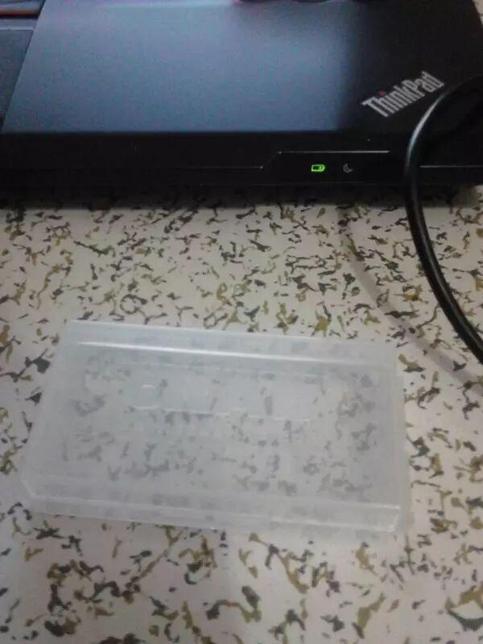 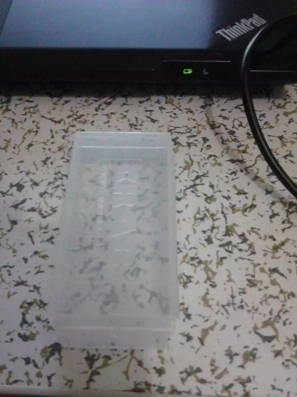 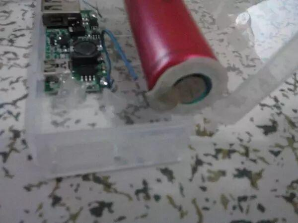 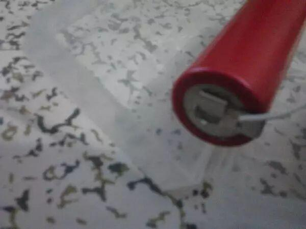 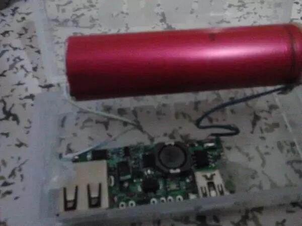 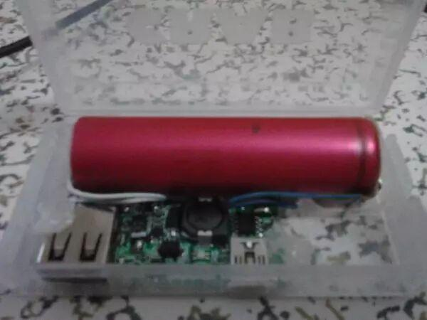 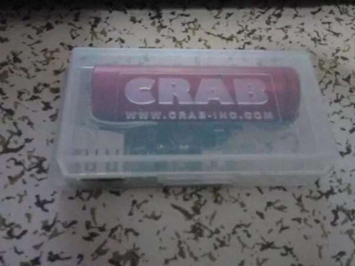 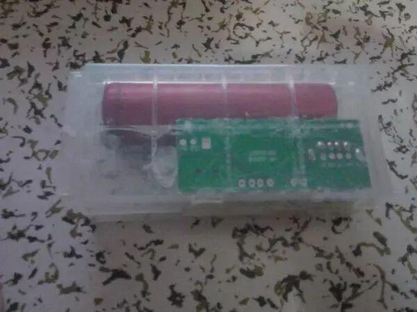 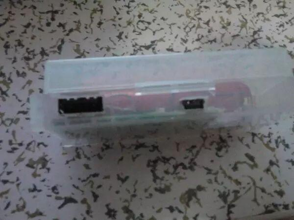 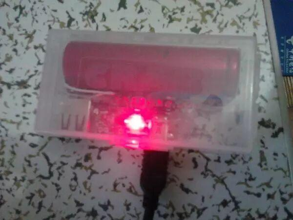 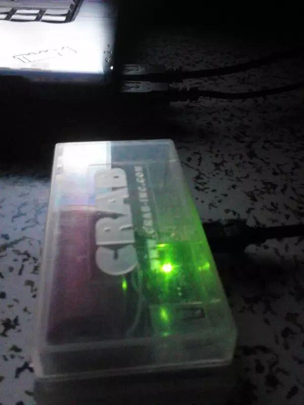 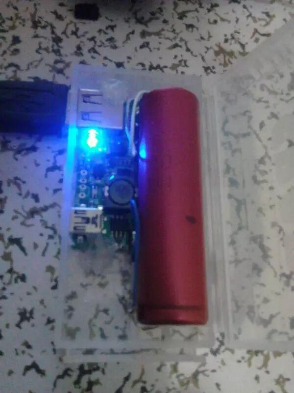
最怕的就是在工作时的紧要关头就没电了，所以决定自己动手做个充电宝吧。
咱要求也不高，就是关键时候够用就行，尽量轻巧。
so，开工吧。
网购的升压、充电、保护一体板（买了好几块）
居然还有一块的胆电容一脚虚焊，最后还是自己动手搞定的
拿到板子的时候外盒还没到，所以只能先将就着用测试线连上试试了。先给电芯充电，红灯亮。
大约7个多小时候转绿灯了（充电头的标称输出能力是500ma），忘了拍了。测得转灯后的电压是4.20V，还是比较标准的。
然后就是输出实验，拿来做小白鼠的是诺基亚C7，充电时蓝灯亮。
千盼万盼的外壳终于到了。
其实就是很一般的18650收纳盒，为了把电芯卡的好一点买的是相对比较紧凑的，壳子的质量很好很厚实以后耐摔。不过开壳子的时候也让我费了不少力气。
接下来就是加工壳子了，不过中间过程一鼓作气忘了拍照了，只能给大家看成品了。不过反正也不难的。
焊接好18650电芯的两极
焊好升压板接线，把升压板放入盒子
升压板的固定是用的热熔胶，简单易用。
盖上盒子后的样子
国际惯例，翻过来再来一张
重点是侧面，USB口就开在这里
做好了，接下来当然是充放电了。
充电状态，红灯亮
充满，转绿灯
最后输出给手机充电
说说使用感受。
首先，觉得1节18650电池够用了，给诺基亚C7充一次半点足够了。本来充电宝就是应急的，并不是越大越好。
其次，这个充电宝是用1个两节18650电芯的收纳盒改的，体积比较小。
再次，这个板子对诺基亚手机充电会有点问题，就是只能用诺基亚原装充电线充，数据线不行。诺基亚手机如果需要用数据线充电，那就必须用什么东西短接一下USB输出的数据线部分，这个诺基亚手机的识别问题，其他手机不受影响。
最后要找个合适的时候做个2节电芯的，不过这个壳子可能要换了。
编辑/马忠臣